<title>Cuatro maquetas hasta v1</title>
<meta name="claude:viewport-fit-sides" content="cover">
<link rel="preconnect" href="https://fonts.googleapis.com">
<link rel="preconnect" href="https://fonts.gstatic.com" crossorigin>
<link rel="stylesheet" href="https://fonts.googleapis.com/css2?family=EB+Garamond:ital,wght@0,400;0,500;1,400&family=Inter+Tight:wght@400;500;600&display=swap">
<style>
/* Una columna de papel y tinta, como las páginas «Montado»: cada mejora con su foto de hoy, sus
   opciones pintadas sobre la app de verdad, lo medido y una recomendada. Terracota = lo de hoy;
   oliva = la recomendada. */
:root{
  --paper:#F2EDE0;--card:#FBF8F1;
  --ink:#1F1C17;--ink-2:#4A453C;--ink-3:#77705F;
  --line:#C9C0A8;
  --olive:#3E5A3A;--olive-soft:rgba(62,90,58,.12);
  --terra:#A85E43;--terra-soft:rgba(168,94,67,.12);
  --display:'EB Garamond',Georgia,'Times New Roman',serif;
  --ui:'Inter Tight',system-ui,-apple-system,'Segoe UI',sans-serif;
}
@media (prefers-color-scheme: dark){:root:not([data-theme="light"]){
  --paper:#1d1a14;--card:#2c271f;--ink:#EDE5D3;--ink-2:#c0b49e;--ink-3:#B2A995;--line:#4d4536;
  --olive:#98B58B;--olive-soft:rgba(122,154,109,.16);--terra:#E8A98F;--terra-soft:rgba(232,169,143,.14);color-scheme:dark;
}}
:root[data-theme="dark"]{
  --paper:#1d1a14;--card:#2c271f;--ink:#EDE5D3;--ink-2:#c0b49e;--ink-3:#B2A995;--line:#4d4536;
  --olive:#98B58B;--olive-soft:rgba(122,154,109,.16);--terra:#E8A98F;--terra-soft:rgba(232,169,143,.14);color-scheme:dark;
}
*{box-sizing:border-box}
body{margin:0;background:var(--paper);color:var(--ink);font-family:var(--ui);font-size:16px;line-height:1.55;-webkit-text-size-adjust:100%}
main{max-width:880px;margin:0 auto;padding-left:max(16px,env(safe-area-inset-left,0px));padding-right:max(16px,env(safe-area-inset-right,0px));padding-block:40px 72px}
h1,h2,h3{font-family:var(--display);font-style:italic;font-weight:400;line-height:1.15;margin:0;text-wrap:balance}
h1{font-size:clamp(32px,6vw,44px)}
h2{font-size:clamp(23px,4vw,28px);margin:48px 0 10px;padding-top:22px;border-top:1px solid var(--line)}
h3{font-size:20px;margin:26px 0 6px}
p{margin:0 0 12px;color:var(--ink-2);max-width:68ch}
strong{color:var(--ink);font-weight:500}
code{font-size:13px}
.eyebrow{font-size:12px;letter-spacing:.14em;text-transform:uppercase;color:var(--ink-3);margin-bottom:10px}
.lead{font-family:var(--display);font-size:21px;color:var(--ink);max-width:62ch;margin-top:14px}
.letra{display:inline-block;min-width:1.6em;font-family:var(--ui);font-style:normal;font-weight:600;font-size:15px;color:var(--ink-3)}
.op.rec .letra{color:var(--olive)}
.op h3 .tag{font-family:var(--ui);font-style:normal;font-size:12px;letter-spacing:.08em;text-transform:uppercase;color:var(--olive);margin-left:8px;white-space:nowrap}
.fotos{display:grid;gap:12px;grid-template-columns:repeat(auto-fill,minmax(150px,1fr));margin:12px 0 14px;max-width:720px}
figure{margin:0;min-width:0}
figure a{display:block}
figure img{display:block;width:100%;height:auto;border:1px solid var(--line);border-radius:6px}
figcaption{font-size:13px;color:var(--ink-3);margin-top:6px;line-height:1.4}
figure.hoy figcaption b{color:var(--terra);font-weight:500}
.op.rec figure figcaption b{color:var(--olive);font-weight:500}
.copy{background:var(--card);border:1px solid var(--line);border-radius:10px;padding:12px 16px;margin:10px 0 14px;max-width:68ch}
.copy p{margin:0 0 8px;color:var(--ink)}
.copy p:last-child{margin-bottom:0}
.copy .en{display:block;font-size:13px;color:var(--ink-3);margin-top:2px}
.tabla{overflow-x:auto;margin:12px 0 16px;max-width:100%}
table{border-collapse:collapse;font-size:14px;min-width:100%}
th,td{text-align:left;padding:7px 10px;border-bottom:1px solid var(--line);vertical-align:top}
th{font-weight:500;color:var(--ink-3);font-size:12px;letter-spacing:.06em;text-transform:uppercase}
td{color:var(--ink-2)}
td.num{font-variant-numeric:tabular-nums;white-space:nowrap}
tr.rec td{color:var(--ink)}
tr.rec td:first-child{color:var(--olive);font-weight:500}
.nota{font-size:13px;color:var(--ink-3)}
.pregunta{border-left:3px solid var(--olive);padding:4px 0 4px 14px;margin:20px 0}
.pregunta p{margin-bottom:6px}
.rec-linea{color:var(--olive)}
.final td:nth-child(2){font-weight:500;color:var(--olive);white-space:nowrap}
</style>

<main>
  <div class="eyebrow">PACE · lo que queda hasta v1 · 16 nov. 2026</div>
  <h1>Cuatro maquetas hasta v1</h1>
  <p class="lead">Cuatro mejoras de tu lista, pintadas sobre la app de verdad en el móvil. En cada una, una letra.</p>
  <p>Nada está montado: con tus letras se montan después. Cada foto es la app compilada (la 0.206.0) con la opción pintada encima; solo lo nuevo es de mentira. Lo que solo se ve desde v1 (la semana de prueba, la compra) está forzado como en las pruebas, sin tocar el código. Medido a 360 × 640, el móvil más bajo que medimos, y a 360 × 740; en la home y en Ajustes, también con la letra al 115 %. Toca una foto para verla grande.</p>

  <!-- ============================== 1 ============================== -->
  <h2>1 · Los botones del constructor, más grandes para el dedo</h2>
  <p>En «Tus rutinas», cada paso tiene seis botones: menos y más tiempo, subir, bajar y quitar. Hoy miden <strong>24 × 24 px</strong> y entre «↓» y «×» hay 2 px: al ordenar con el dedo es fácil borrar un paso sin querer.</p>
  <div class="fotos" style="max-width:340px">
    <figure class="hoy"><a href="fotos/1-hoy-640.jpg">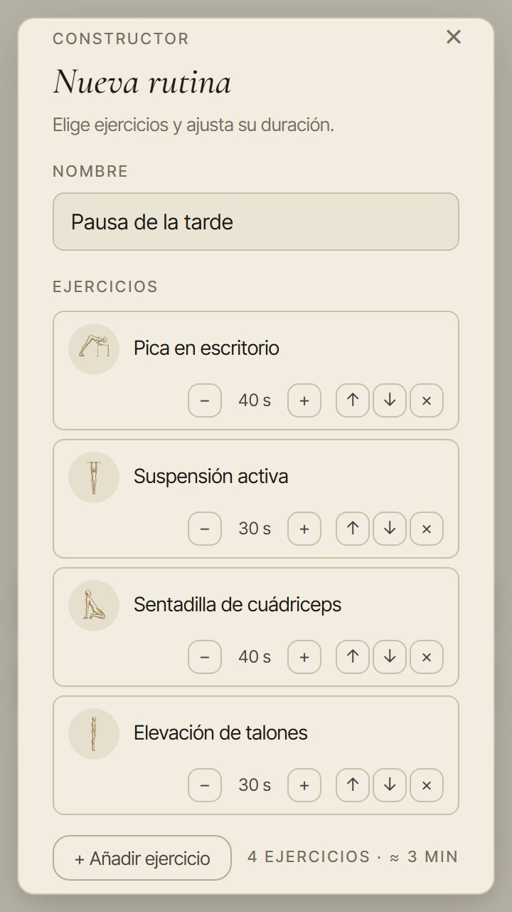</a><figcaption><b>Hoy</b> · 24 px, 2 px entre botones</figcaption></figure>
  </div>

  <div class="op rec">
    <h3><span class="letra">A</span>40 px, y la «×» junto al nombre<span class="tag">Recomendada</span></h3>
    <p>Los botones pasan a 40 × 40, casi el triple de superficie, con 10 px entre ellos. A 360 px no caben seis de 40 en una línea, así que la «×» sube a la línea del nombre, lejos de las flechas: ordenar ya no roza borrar. Abajo, el tiempo a la izquierda y el orden a la derecha.</p>
  </div>
  <div class="op">
    <h3><span class="letra">B</span>44 px, con el mismo reparto</h3>
    <p>La medida que piden Apple y Google para un dedo. Igual que A, un poco más grande: cada paso crece 30 px sobre hoy.</p>
  </div>
  <div class="op">
    <h3><span class="letra">C</span>Donde están, de 24 a 32 px</h3>
    <p>Nada cambia de sitio. Se ven a 32 px y la zona que responde al dedo, invisible, llega a 38 × 44. Pero «↓» y «×» siguen juntas, a 6 px.</p>
  </div>
  <div class="fotos">
    <figure><a href="fotos/1-a-640.jpg">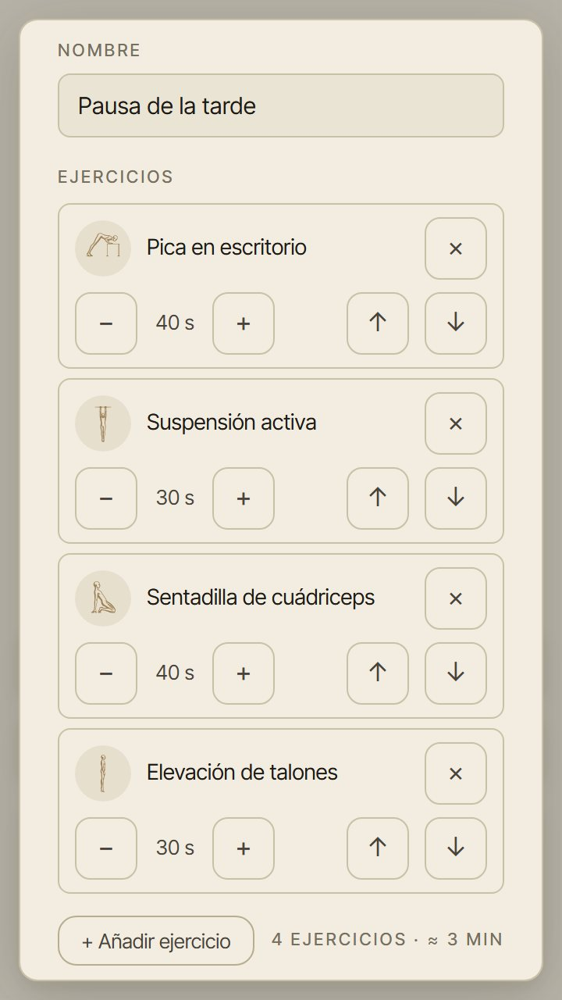</a><figcaption><b>A</b> · 40 px</figcaption></figure>
    <figure><a href="fotos/1-b-640.jpg">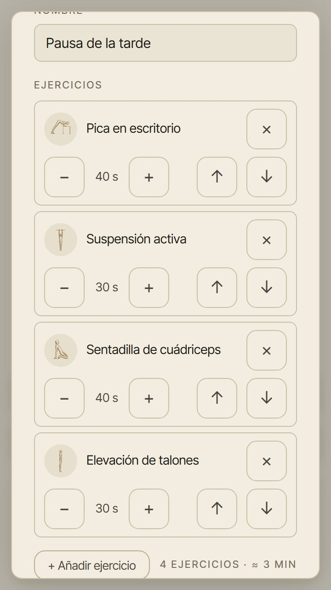</a><figcaption><b>B</b> · 44 px</figcaption></figure>
    <figure><a href="fotos/1-c-640.jpg">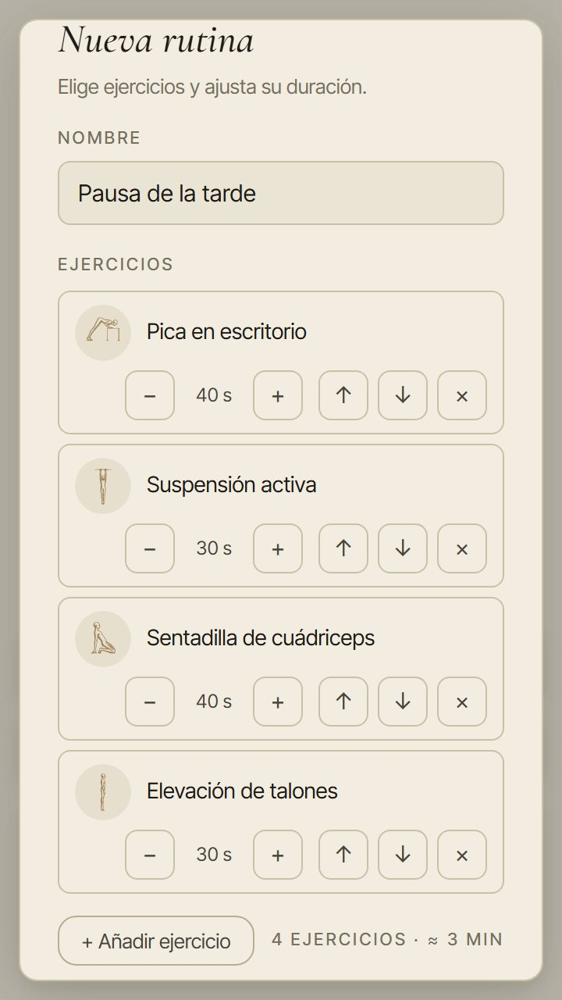</a><figcaption><b>C</b> · 32 px, en su sitio</figcaption></figure>
  </div>
  <div class="tabla"><table>
    <tr><th></th><th>Se ve</th><th>Responde al dedo</th><th>Entre botones</th><th>Alto de un paso</th><th>Lo que baja la ventana con 4 pasos (640 / 740)</th></tr>
    <tr><td>Hoy</td><td class="num">24 × 24</td><td class="num">24 × 24</td><td class="num">2 px</td><td class="num">84 px</td><td class="num">113 / 13 px</td></tr>
    <tr class="rec"><td>A</td><td class="num">40 × 40</td><td class="num">40 × 40</td><td class="num">10 px</td><td class="num">106 px</td><td class="num">201 / 101 px</td></tr>
    <tr><td>B</td><td class="num">44 × 44</td><td class="num">44 × 44</td><td class="num">10 px</td><td class="num">114 px</td><td class="num">233 / 133 px</td></tr>
    <tr><td>C</td><td class="num">32 × 32</td><td class="num">38 × 44</td><td class="num">6 px</td><td class="num">92 px</td><td class="num">145 / 45 px</td></tr>
  </table></div>
  <p class="nota">El constructor es una ventana de editar y ya hoy baja con cuatro pasos a 360 × 640; no es la home. En ninguna opción un botón pisa a otro. No hay textos nuevos.</p>
  <div class="pregunta"><p class="rec-linea"><strong>Recomendada: A.</strong> Cada botón se ve del tamaño que se toca, y quitar un paso queda aparte de ordenarlo.</p></div>

  <!-- ============================== 2 ============================== -->
  <h2>2 · Una nota, una vez, cuando acaba la semana de prueba</h2>
  <p>El día de v1, quien ya usaba PACE ve una hoja: «Siete días de PACE completo», hasta qué día y qué rutinas se le quedan. Pero el día que esa semana acaba, nada lo dice: lo de pago aparece de pronto con su candado. Pintado el jueves 26, con la semana acabada el miércoles.</p>
  <div class="fotos">
    <figure class="hoy"><a href="fotos/2-hoy-home-640.jpg">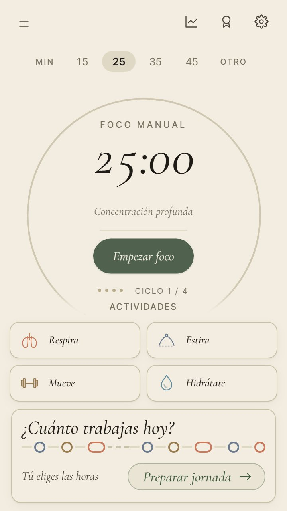</a><figcaption><b>Hoy</b> · la home no dice nada</figcaption></figure>
    <figure class="hoy"><a href="fotos/2-hoy-candados-640.jpg">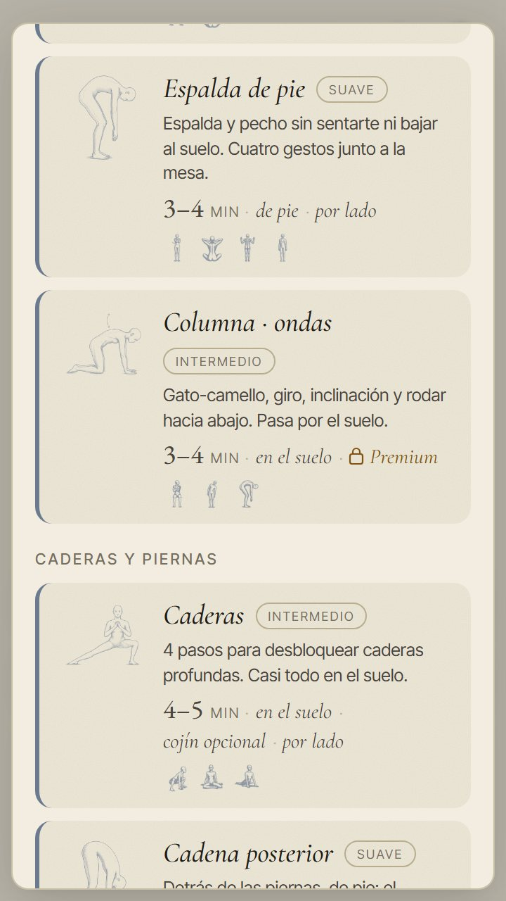</a><figcaption><b>Hoy</b> · y en Estira, el candado</figcaption></figure>
  </div>

  <div class="op rec">
    <h3><span class="letra">A</span>En el sobre de arriba<span class="tag">Recomendada</span></h3>
    <p>El sobre aparece cerrado, con su punto de lacre, junto a Estadísticas, como con la carta del lunes. Al abrirlo, la nota. <strong>Se va</strong> cuando abres el sobre: queda dentro como leída una semana y luego desaparece. Nada salta ni tapa: si no lo abres, no pasa nada.</p>
  </div>
  <div class="fotos">
    <figure><a href="fotos/2a-icono-640.jpg"></a><figcaption><b>A</b> · el sobre, cerrado</figcaption></figure>
    <figure><a href="fotos/2a-hoja-640.jpg">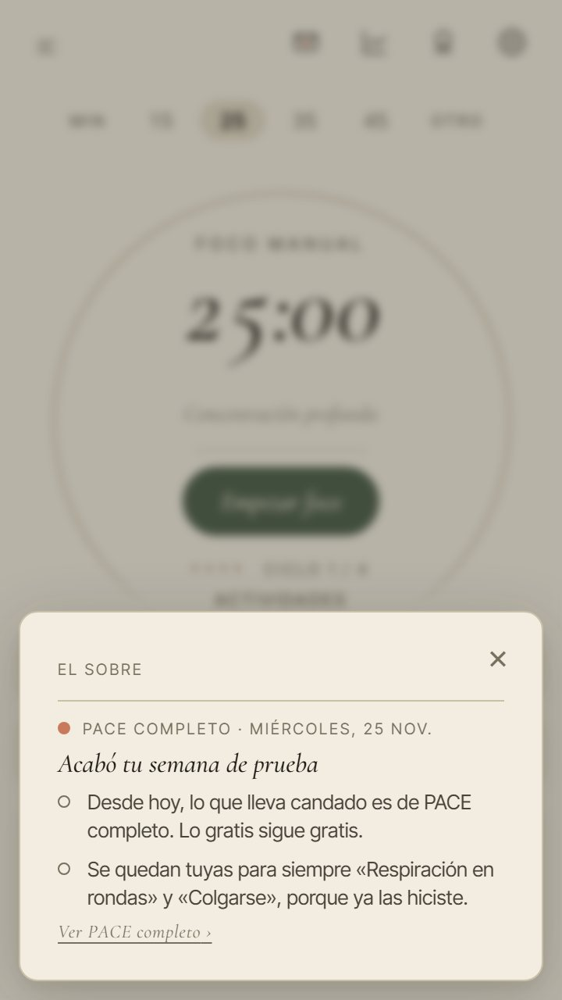</a><figcaption><b>A</b> · al abrirlo</figcaption></figure>
  </div>
  <div class="copy">
    <p>Acabó tu semana de prueba<span class="en">Your trial week has ended</span></p>
    <p>Desde hoy, lo que lleva candado es de PACE completo. Lo gratis sigue gratis.<span class="en">From today, anything with a padlock is part of PACE Complete. What is free stays free.</span></p>
    <p>Se quedan tuyas para siempre «Respiración en rondas» y «Colgarse», porque ya las hiciste.<span class="en">“Full Round Breathing” and “Hanging” stay yours for good, because you have already done them.</span></p>
    <p>Ver PACE completo ›<span class="en">See PACE Complete ›</span></p>
  </div>
  <p class="nota">La lista de rutinas es la de cada persona; sin ninguna, la segunda línea no sale.</p>

  <div class="op">
    <h3><span class="letra">B</span>Una hoja, una vez, al abrir PACE</h3>
    <p>La misma hoja del día de v1, con lo que diría al acabar: tu lista, «Lo gratis sigue gratis», «Entendido» y, debajo y callado, «Tenerlo para siempre · 19,99 € ›». Se va con «Entendido» y no vuelve. Tapa la home hasta que la cierras, como la del primer día.</p>
  </div>
  <div class="op">
    <h3><span class="letra">C</span>Una línea en la biblioteca</h3>
    <p>La primera vez que abres Respira, Estira o Mueve con la semana acabada, bajo el subtítulo: «Tu semana de prueba acabó ayer: lo que lleva candado ya es de PACE completo. Ver PACE completo ›». Sale justo donde están los candados; empuja las tarjetas 48 px y se va al cerrar esa biblioteca.</p>
  </div>
  <div class="fotos">
    <figure><a href="fotos/2b-hoja-640.jpg">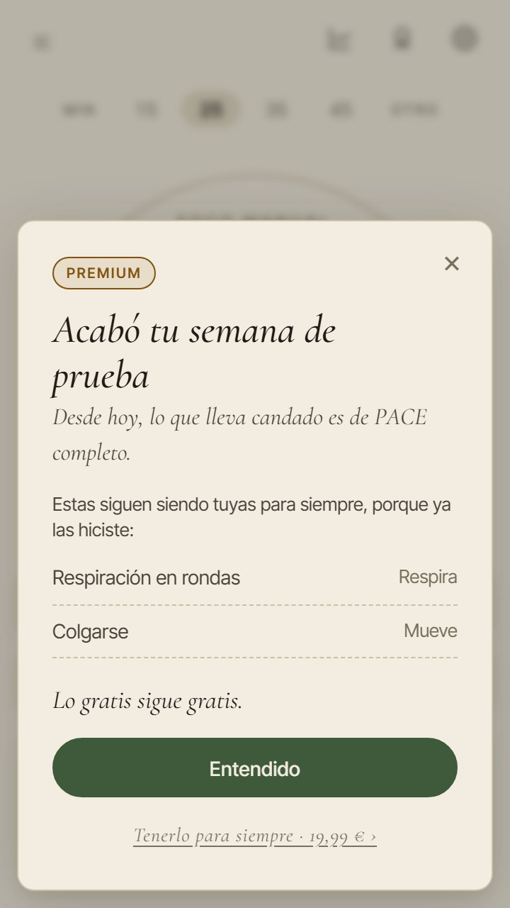</a><figcaption><b>B</b> · la hoja al abrir</figcaption></figure>
    <figure><a href="fotos/2c-biblioteca-640.jpg">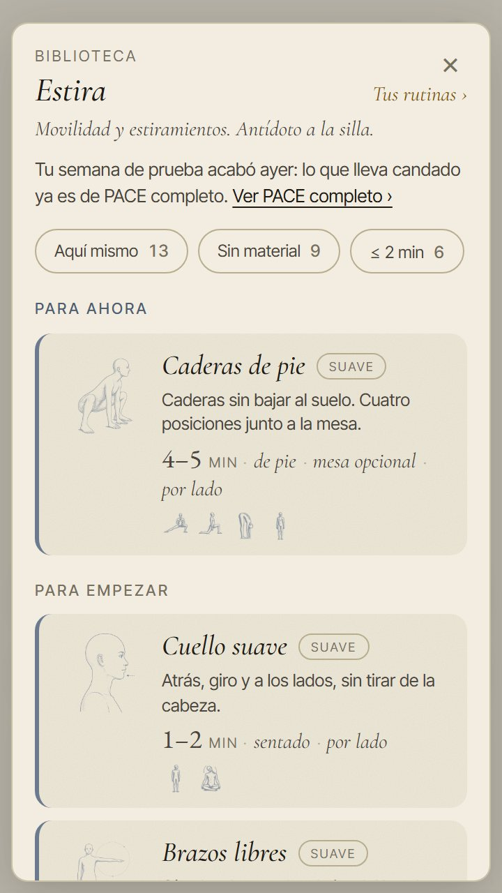</a><figcaption><b>C</b> · la línea en Estira</figcaption></figure>
  </div>
  <div class="copy">
    <p>B · Acabó tu semana de prueba · Desde hoy, lo que lleva candado es de PACE completo. · Estas siguen siendo tuyas para siempre, porque ya las hiciste: · Entendido · Tenerlo para siempre · 19,99 € ›<span class="en">Your trial week has ended · From today, anything with a padlock is part of PACE Complete. · These stay yours for good, because you have already done them: · Got it · Get it for life · €19.99 ›</span></p>
    <p>C · Tu semana de prueba acabó ayer: lo que lleva candado ya es de PACE completo. Ver PACE completo ›<span class="en">Your trial week ended yesterday: anything with a padlock is now part of PACE Complete. See PACE Complete ›</span></p>
  </div>
  <div class="tabla"><table>
    <tr><th></th><th>Dónde</th><th>Cuándo se va</th><th>Medido a 640 y 740</th></tr>
    <tr class="rec"><td>A</td><td>El sobre, en la barra de arriba</td><td>Al abrir el sobre; una semana después, ni dentro</td><td>Cinco iconos en la barra, ninguno pisa a otro; la nota cabe entera (187 px)</td></tr>
    <tr><td>B</td><td>Una hoja al abrir PACE</td><td>Con «Entendido», para siempre</td><td>La hoja mide 423 px y cabe sin bajar; sus dos botones no se pisan</td></tr>
    <tr><td>C</td><td>Bajo el subtítulo de la biblioteca</td><td>Al cerrar la primera biblioteca que la enseña</td><td>La cabecera pasa de 69 a 117 px; las tarjetas bajan 48 px</td></tr>
  </table></div>
  <div class="pregunta"><p class="rec-linea"><strong>Recomendada: A.</strong> El sobre ya es el sitio de lo que PACE te deja escrito: avisa sin interrumpir, y una hoja con precio al abrir sería la venta insistente que PACE no hace.</p></div>

  <!-- ============================== 3 ============================== -->
  <h2>3 · «Tenerlo para siempre» en Ajustes durante la semana de prueba</h2>
  <p>Durante la semana, «Tus datos» dice «PACE completo · Prueba hasta el 24 de noviembre» (en la web, tocarla abre el campo del código). La fila de compra, «Tenerlo para siempre · 19,99 €», solo sale cuando la semana acaba. Elegiste enseñarla antes con maqueta (S2 A); aquí, cómo, sin que la fila de la prueba pierda lo que dice.</p>
  <div class="fotos" style="max-width:340px">
    <figure class="hoy"><a href="fotos/3-hoy-640.jpg">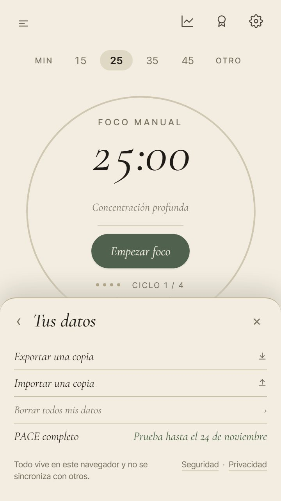</a><figcaption><b>Hoy</b> · solo la fila de la prueba</figcaption></figure>
  </div>

  <div class="op rec">
    <h3><span class="letra">A</span>Una fila más, debajo<span class="tag">Recomendada</span></h3>
    <p>La de la prueba no cambia. Debajo, la fila de compra de siempre, la misma que saldrá al acabar la semana: abre la invitación con su botón de comprar. La hoja crece 34 px.</p>
  </div>
  <div class="op">
    <h3><span class="letra">B</span>En la línea pequeña de la fila de la prueba</h3>
    <p>Una sola fila: «PACE completo · Prueba hasta el 24 de noviembre» y, bajo el nombre, «Tenerlo para siempre · 19,99 € ›». Tocarla abre la invitación, con la compra y el código.</p>
  </div>
  <div class="op">
    <h3><span class="letra">C</span>La compra manda y la fecha baja</h3>
    <p>«Tenerlo para siempre · 19,99 €» y, debajo y pequeño, «Prueba de PACE completo hasta el 24 de noviembre». Ocupa poco, pero la fecha se lee menos.</p>
  </div>
  <div class="fotos">
    <figure><a href="fotos/3-a-640.jpg">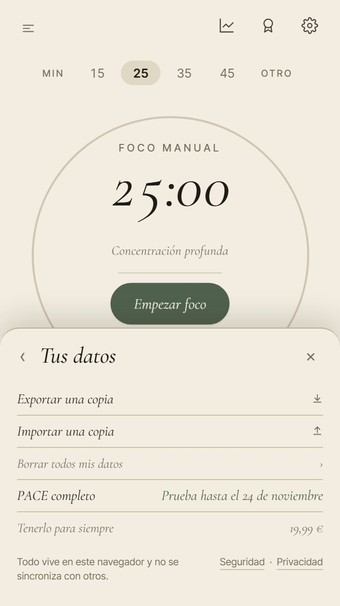</a><figcaption><b>A</b> · dos filas</figcaption></figure>
    <figure><a href="fotos/3-a-640-115.jpg">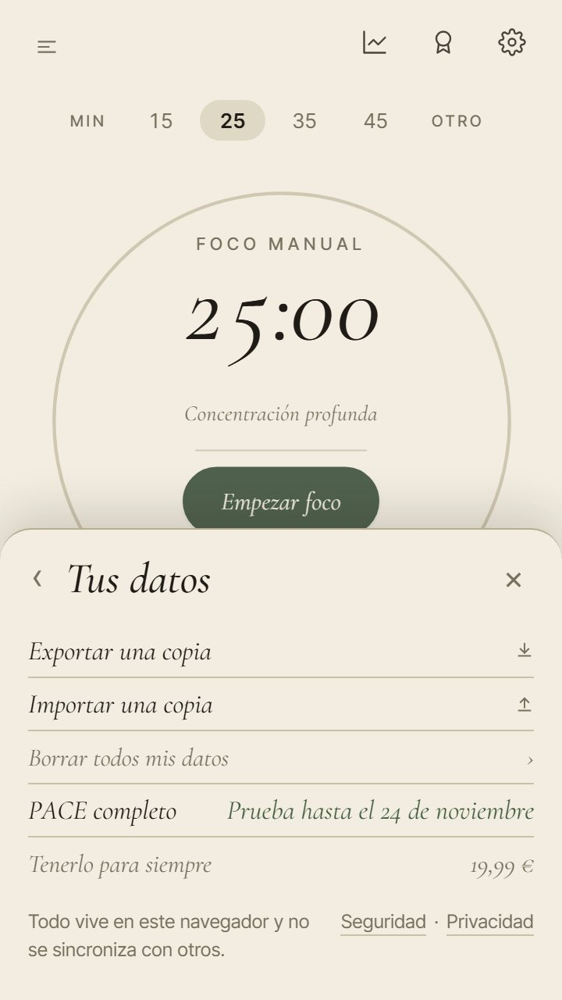</a><figcaption><b>A</b> · letra al 115 %</figcaption></figure>
    <figure><a href="fotos/3-b-640.jpg">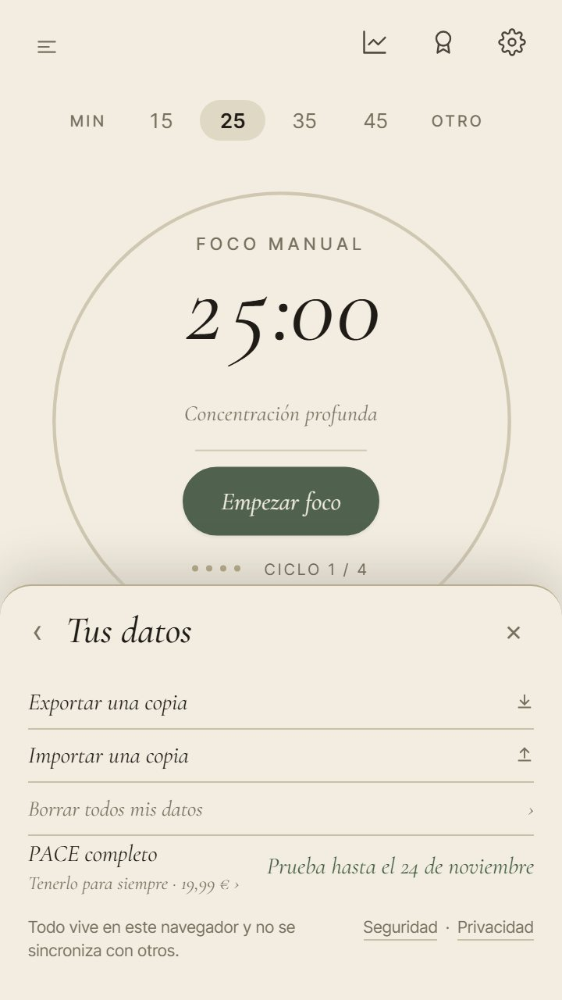</a><figcaption><b>B</b> · en la línea pequeña</figcaption></figure>
    <figure><a href="fotos/3-c-640-115.jpg">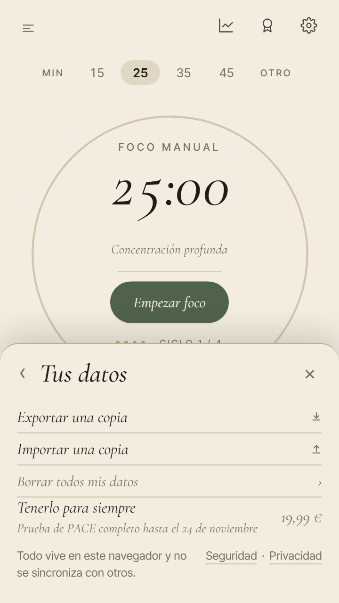</a><figcaption><b>C</b> · la fecha abajo (115 %)</figcaption></figure>
  </div>
  <div class="copy">
    <p>Tenerlo para siempre · 19,99 €<span class="en">Get it for life · €19.99</span></p>
    <p>Prueba hasta el 24 de noviembre<span class="en">Trial until 24 November</span></p>
    <p>C · Prueba de PACE completo hasta el 24 de noviembre<span class="en">PACE Complete trial until 24 November</span></p>
  </div>
  <div class="tabla"><table>
    <tr><th></th><th>Alto de «Tus datos»</th><th>Scroll a 640 / 740</th><th>Con la letra al 115 %</th></tr>
    <tr><td>Hoy</td><td class="num">260 px</td><td class="num">0 / 0</td><td class="num">0 / 0</td></tr>
    <tr class="rec"><td>A</td><td class="num">294 px</td><td class="num">0 / 0</td><td class="num">0 / 0</td></tr>
    <tr><td>B</td><td class="num">266 px</td><td class="num">0 / 0</td><td class="num">0 / 0</td></tr>
    <tr><td>C</td><td class="num">266 px</td><td class="num">0 / 0</td><td class="num">0 / 0</td></tr>
  </table></div>
  <p class="nota">Es la web con la tienda abierta, como el día que se encienda la venta. En Android y en el iPhone la fila llegará con la compra de cada tienda.</p>
  <div class="pregunta"><p class="rec-linea"><strong>Recomendada: A.</strong> La fila de la prueba sigue diciendo lo mismo en su sitio, y la de compra es la de siempre: cuando acabe la semana, solo se va la de arriba.</p></div>

  <!-- ============================== 4 ============================== -->
  <h2>4 · Las bibliotecas a mano en el móvil, sin abrir el cajón</h2>
  <p>Por libre, la home del móvil ya tiene Respira, Estira, Mueve e Hidrátate. Pero con la jornada elegida, el panel de «A tu ritmo» ocupa su sitio y las bibliotecas solo quedan en el cajón (☰): para «un estiramiento de cuello ahora» hay que abrirlo primero.</p>
  <div class="fotos" style="max-width:340px">
    <figure class="hoy"><a href="fotos/4-hoy-640.jpg">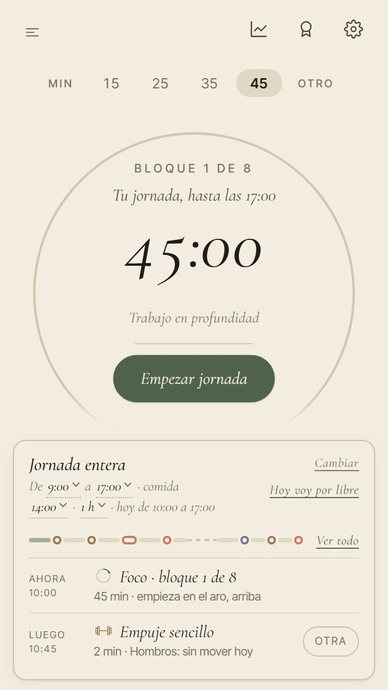</a><figcaption><b>Hoy</b> · con la jornada, sin bibliotecas</figcaption></figure>
  </div>

  <div class="op rec">
    <h3><span class="letra">A</span>Tres iconos en la barra de arriba<span class="tag">Recomendada</span></h3>
    <p>Respira, Estira y Mueve, con los dibujos del cajón, a la izquierda de Estadísticas: un toque y estás en la biblioteca. No cuestan ni un píxel de alto: el aro y el panel no se mueven, a 640 y a 740, y tampoco con la letra al 115 %. Con algo en el sobre caben los ocho iconos sin pisarse. Solo salen con la jornada elegida: por libre ya están abajo.</p>
  </div>
  <div class="fotos">
    <figure><a href="fotos/4-a-640.jpg">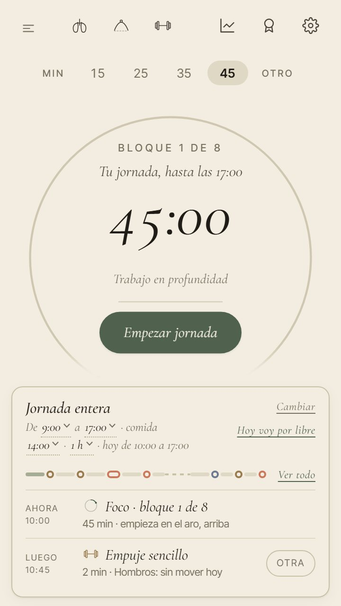</a><figcaption><b>A</b> · en la barra</figcaption></figure>
    <figure><a href="fotos/4-a-sobre-640.jpg">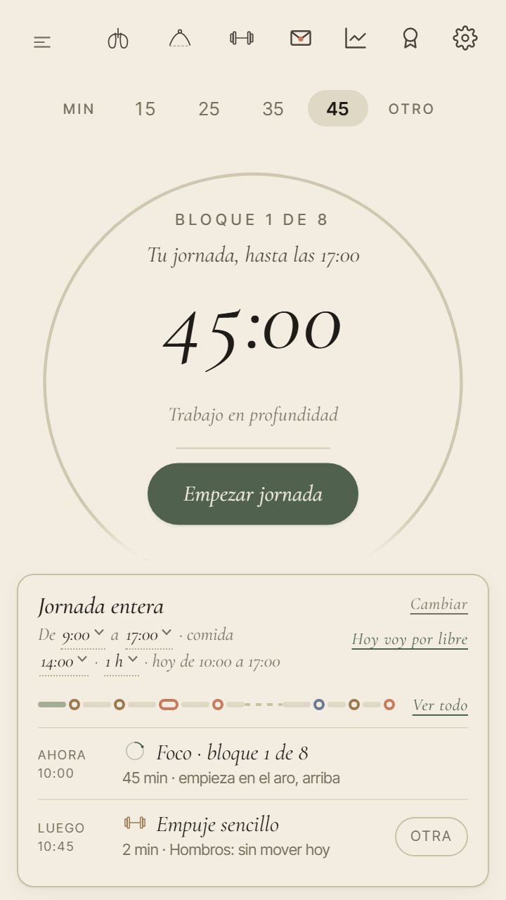</a><figcaption><b>A</b> · con el sobre: ocho iconos</figcaption></figure>
    <figure><a href="fotos/4-a-640-115.jpg">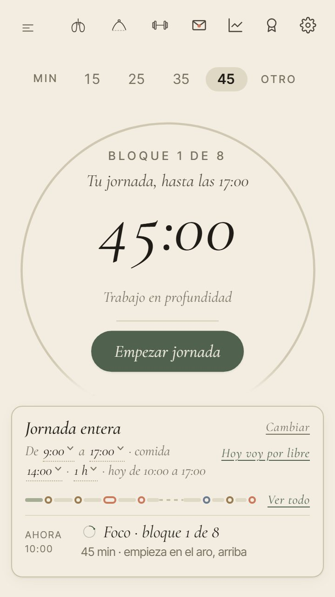</a><figcaption><b>A</b> · letra al 115 %</figcaption></figure>
  </div>
  <div class="op">
    <h3><span class="letra">B</span>Una fila en el panel de la jornada</h3>
    <p>La fila «Respira · Estira · Mueve» del cajón, tal cual, debajo de «Luego». A 740 cabe. A 640 el panel quita «Luego» para hacerle sitio, y con la letra al 115 % la home pide 84 px de scroll y deja fuera «Otra» y las tres bibliotecas.</p>
  </div>
  <div class="op">
    <h3><span class="letra">C</span>Arriba de «Ver todo»</h3>
    <p>La fila va en la hoja del día, bajo lo que llevas. La home no cambia nada, pero son dos toques: «Ver todo» y luego la biblioteca.</p>
  </div>
  <div class="fotos">
    <figure><a href="fotos/4-b-640.jpg">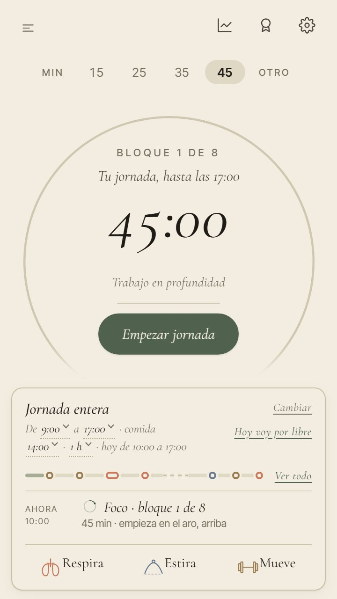</a><figcaption><b>B</b> · a 640, sin «Luego»</figcaption></figure>
    <figure><a href="fotos/4-b-740.jpg">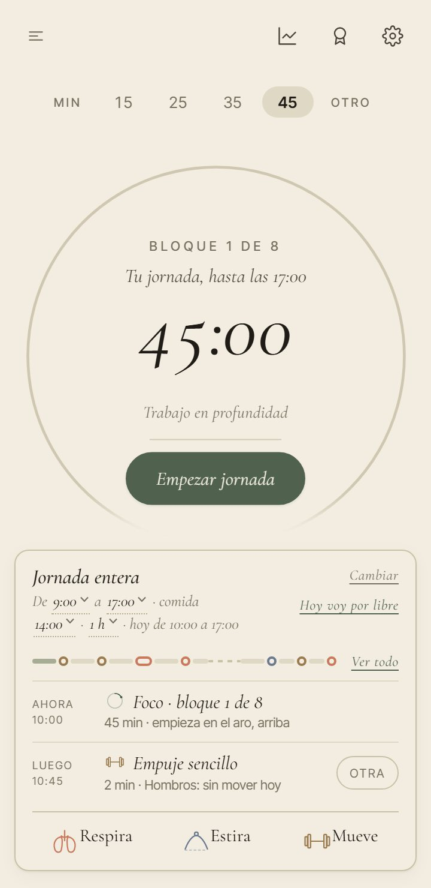</a><figcaption><b>B</b> · a 740</figcaption></figure>
    <figure><a href="fotos/4-c-640.jpg">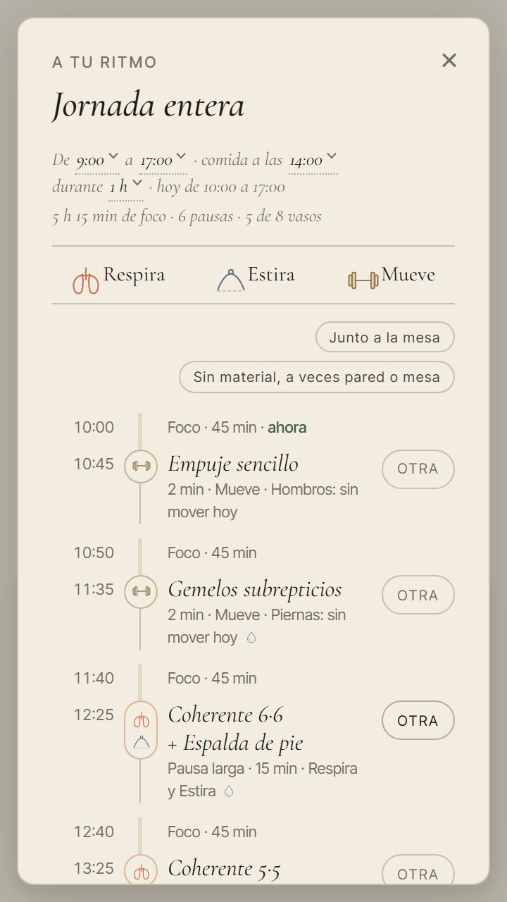</a><figcaption><b>C</b> · en «Ver todo»</figcaption></figure>
  </div>
  <div class="tabla"><table>
    <tr><th></th><th>Toques hasta Estira</th><th>Scroll a 640 / 740</th><th>Con la letra al 115 %</th><th>Qué cede</th></tr>
    <tr><td>Hoy</td><td class="num">2 (cajón)</td><td class="num">0 / 0</td><td class="num">0 / 0</td><td>—</td></tr>
    <tr class="rec"><td>A</td><td class="num">1</td><td class="num">0 / 0</td><td class="num">0 / 0</td><td>Nada; la barra pasa de 4 a 7 iconos (8 con el sobre)</td></tr>
    <tr><td>B</td><td class="num">1</td><td class="num">0 / 0</td><td class="num">84 / 0 px</td><td>«Luego», a 640</td></tr>
    <tr><td>C</td><td class="num">2</td><td class="num">0 / 0</td><td class="num">—</td><td>Nada en la home</td></tr>
  </table></div>
  <p class="nota">Los iconos de A no llevan texto, como los de al lado; el lector de pantalla dice «Biblioteca de Respira» (en inglés, «Breathe library»). No hay textos nuevos a la vista.</p>
  <div class="pregunta"><p class="rec-linea"><strong>Recomendada: A.</strong> Es la única que da el toque sin quitar nada: ni el aro, ni «Luego», ni la home sin scroll.</p></div>

  <!-- ============================== resumen ============================== -->
  <h2>Las cuatro, de un vistazo</h2>
  <div class="tabla final"><table>
    <tr><th>Pregunta</th><th>Recomendada</th><th>Por qué</th></tr>
    <tr><td>1 · ¿Cómo agrandamos los botones de «Tus rutinas»?</td><td>A</td><td>40 px y la «×» junto al nombre: se toca lo que se ve y quitar queda aparte de ordenar</td></tr>
    <tr><td>2 · ¿Dónde sale la nota de que acabó la semana de prueba?</td><td>A</td><td>En el sobre de arriba: avisa sin interrumpir y sin vender al abrir</td></tr>
    <tr><td>3 · ¿Cómo enseñamos «Tenerlo para siempre» durante la semana?</td><td>A</td><td>Una fila más debajo: la de la prueba no cambia</td></tr>
    <tr><td>4 · ¿Cómo dejamos las bibliotecas a un toque con la jornada?</td><td>A</td><td>Tres iconos arriba: no quitan sitio a nada</td></tr>
  </table></div>
  <p class="nota">Contesta con cuatro letras («1A 2A 3A 4A») y se montan. Las fotos y medidas salen de <code>node docs/proposals/maquetas-4-16nov/genera.js</code> (rama <code>claude/maquetas-4-16nov-90bbca</code>).</p>
</main>
